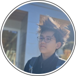
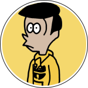
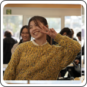
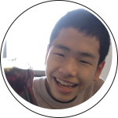
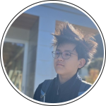
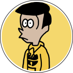
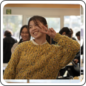
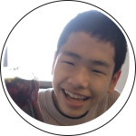

CTC×KMC
取り組み
定例
2週間に1度、CTCさんとCTC奨学生でmtgを行なっています。進捗の報告や、CTCについて知る講義を受けたり内容はさまざまで、つい話に夢中になってmtgの時間を過ぎてしまうなんてことも。穏やかな人、面白い人が多いので、リラックスしてmtgに参加できます。
本社訪問
2年連続、夏休み期間に東京神谷町にあるCTC本社を訪問しました。普段は関わることができない、CTCの社員の方々と交流できるかつ、CTCの歴史や経営、事業についてしっかりと学べます！昨年の本社訪問では、CTC奨学生は全員出身地が違うということで、手土産選手権が開かれました。小さなことから楽しさや嬉しさを見つけることができるSPです。
オリジナルTシャツ作り
CTC奨学生が、ここぞという時に着ているお揃いのTシャツ。実は2年前、3年生が本社訪問時に描いた絵をもとにデザインしたもの。優しい色合いで描かれた絵は、なんだか私たちを見守ってくれているような気がします。デザインはRICOHさんの力を借りて印刷されたもの。神山まるごと高専のSP企業の繋がりを感じますね。
Tomomaru Topics
昨年からCTC社内に向けて、CTC奨学生の普段の活動や日常を発信しているデジタル広報紙です。トピックの選定から文章、デザインまで全てCTC奨学生が行なっています。自分たちの活動をCTCの方々に知っていただける、良い繋がりになっています。まだ2回しか出していないので、新1年生のみなさんと一緒に3回目、4回目を作っていけると嬉しいです。
マレーシアコンベンション
2年生のれおくんが昨年7月に取り組んだプロジェクトです。彼が制作する水中ドローンをマレーシアで学会発表するためにクラウドファンディングをする際、ご協力いただきました。無事クラウドファンディングは成功し、れおくんは学会発表で賞を受賞して帰ってきました。個人の取り組みも、全力で応援してくれるCTCさんに背中を押されています。
BOOMS!ピッチ
BOOMS!ピッチでは、CTC奨学生がアイデアを発表し、CTC社内の方々にフィードバックをもらう場として運営されています。自分たちの考えたビジネスアイデアを試しながら、より良いものへとブラッシュアップしていく機会になっています。
アニメーション
みなさんに見ていただいたアニメーションも、最終発表に向けてCTCと一緒に取り組んだものづくりです。キャラクター、脚本、原画、アニメーション化まで制作期間は2ヶ月ほどと短くはありましたが、2年生4人の強みを活かした作品を作り上げることができました。強みや性格がバラバラな4人だからこそ、作り上げることができた大切な作品です。
???
実は、新1年生のみなさんと一緒にものづくりをしてみよう！というプロジェクトが始動していたりします。新しいCTC奨学生の第一歩としてみなさんと仲良くなれたら良いな、と思って準備しているのでお楽しみに！
 






